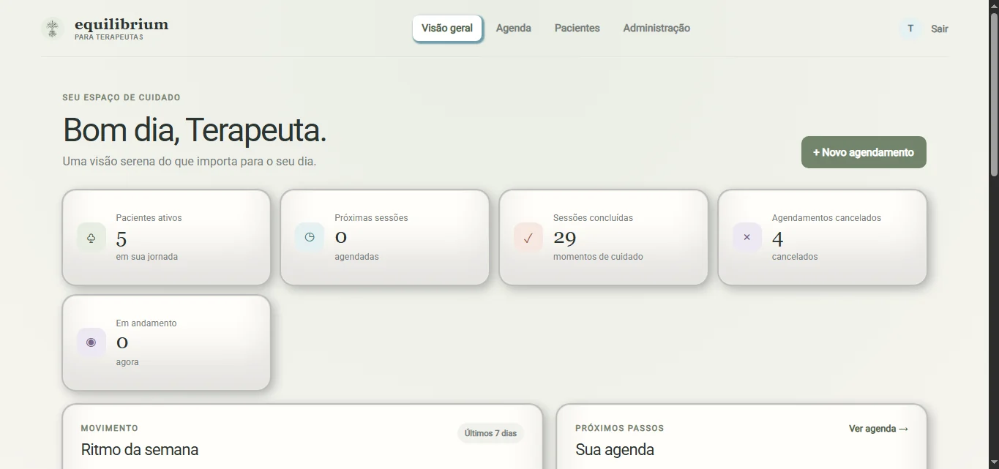

Pacientes por terapeuta
Cadastro, edição e consulta paginada. Os registros são filtrados por terapeuta_id; o telefone é normalizado e, quando informado, único dentro de cada carteira.
Case técnico / Aplicação web
Aplicação web multiusuário para gestão de pacientes, agendamentos e sessões de terapia à distância.
Python · Flask · MySQL · JavaScript
Escopo atual finalizado · Projeto de portfólio ativo

Visão geral
A rotina de um terapeuta envolve pacientes, horários e a preparação de cada sessão. O Equilibrium reúne essas atividades em uma aplicação, com acesso individual para terapeutas e administração de contas. O objetivo é organizar o trabalho sem misturar as carteiras de pacientes.
Desenvolvimento da aplicação web: rotas Flask, serviços de negócio, persistência em MySQL, templates Jinja2 e interações em JavaScript, com controles de acesso e testes nas áreas críticas.
Cadastro, edição e consulta paginada. Os registros são filtrados por terapeuta_id; o telefone é normalizado e, quando informado, único dentro de cada carteira.
Agendamentos com duração configurável e seleção de música, edição de horário, cancelamento e histórico paginado. O dashboard reúne indicadores e informações recentes.
Cada sessão tem um token de acesso exclusivo. O cronômetro usa timestamps registrados no servidor para manter o estado após recarregar a página, com encerramento automático e controles de áudio.
Perfis ADMIN e TERAPEUTA, ativação e desativação de contas, redefinição de senhas e comando CLI para criar o primeiro administrador.
Arquitetura
As rotas HTTP recebem as requisições; a camada de serviços concentra regras de negócio e acesso ao MySQL. Templates Jinja2 e arquivos estáticos ficam separados. Essa estrutura mantém o fluxo legível sem adicionar camadas que o escopo atual não exige.
A sessão identifica o usuário, mas perfil e status são consultados no banco a cada requisição protegida. Dados antigos da sessão não mantêm permissões após uma desativação.
A normalização de telefones evita formatos diferentes para o mesmo valor. A unicidade por terapeuta é aplicada no banco; os serviços traduzem erros de integridade em mensagens para o usuário.
O início da sessão é registrado uma única vez. Ao recarregar a interface, o tempo restante é recalculado a partir dos timestamps, em vez de iniciar uma nova contagem.
Segurança
Testes
A suíte usa pytest, Flask test client, mocks e monkeypatching. Os cenários existentes verificam credenciais válidas e inválidas, contas inativas, falha de conexão, rotas protegidas, permissões atuais e criação do primeiro administrador. Os mocks permitem testar essas regras sem uma instância real de MySQL.
Esses testes se concentram em autenticação, autorização e CLI; não representam cobertura completa de todos os fluxos.
pytest · Flask test client · mocks · monkeypatch
Desafios & aprendizados
O desafio técnico é manter coerência entre usuário, dados e estado da sessão. O projeto evidencia três aprendizados: autorização precisa acompanhar o estado atual da conta; integridade não deve depender só da interface; e um estado que precisa sobreviver a recarregamentos deve ser persistido.
O Equilibrium permanece ativo como projeto de portfólio. O roadmap contém possíveis melhorias, como autenticação de dois fatores para administradores, logging e maior cobertura de testes. São evoluções futuras, que pretendo implementar muito em breve.
Sem demonstração pública disponível no momento.